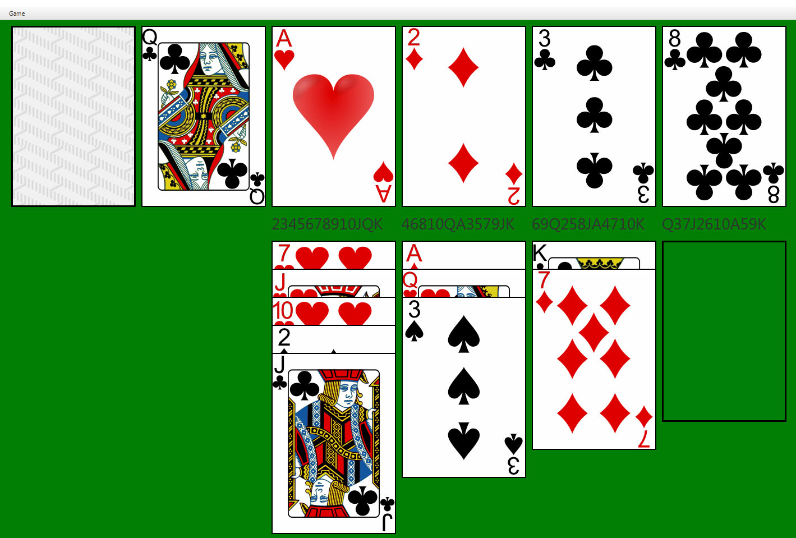
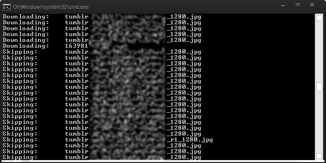
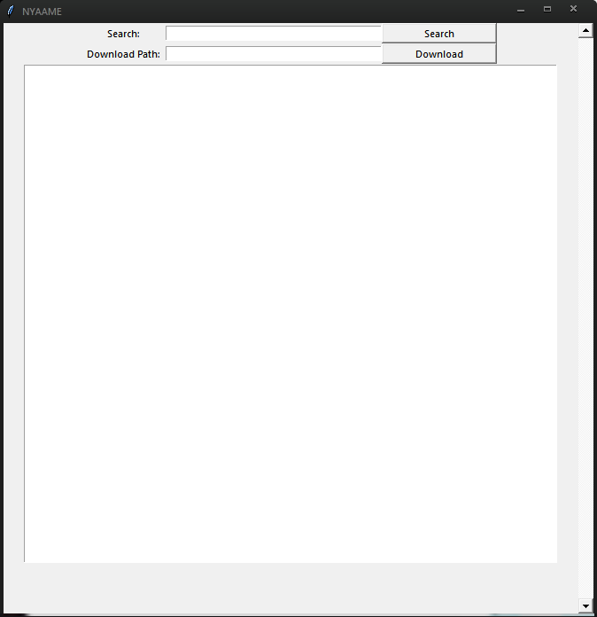
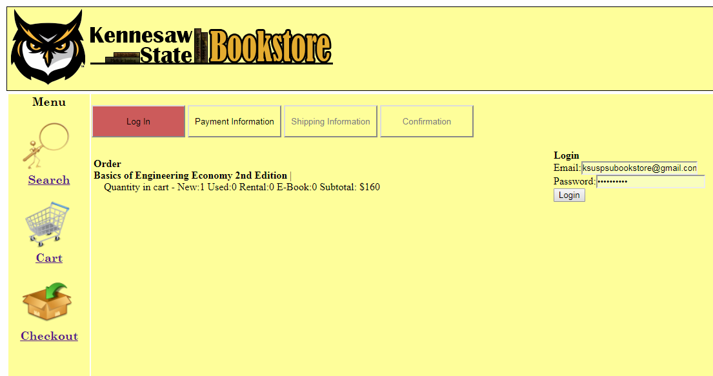

Fully functional 3D platformer in the style of Bomberman Hero for the N64. Created with Unity for App Extension and Scripting Spring 2017. Written in C# paired with unity editor. Currently unreleased.

Project for object oriented design spring 2017, by group 4. Features fully playable version of calculation solitaire with undo. Written in Scala.

Python script that scrapes images and videos from one or more tumblr blogs specified in a configuration.

Python script (with optional GUI) that automatically downloads torrents from a search query on nyaa.eu (site is now defunct and claimed by scammers). It will be updated in the future to support nyaa.si and nyaa.pantsu.cat.

Online book store created in visual studio. Offers a fully functional search (with multiple methods of searching), shopping cart, login, checkout, and automatic email recipt distribution. Bonus features include looking like it was made in the 90s.
Prototype for a video game about a merchant who hires mercenaries to defend him. Has an inventory system, item system including active abilities and consumable items, and full melee and ranged enemy ai and pathing. Written in C# along with Unity.